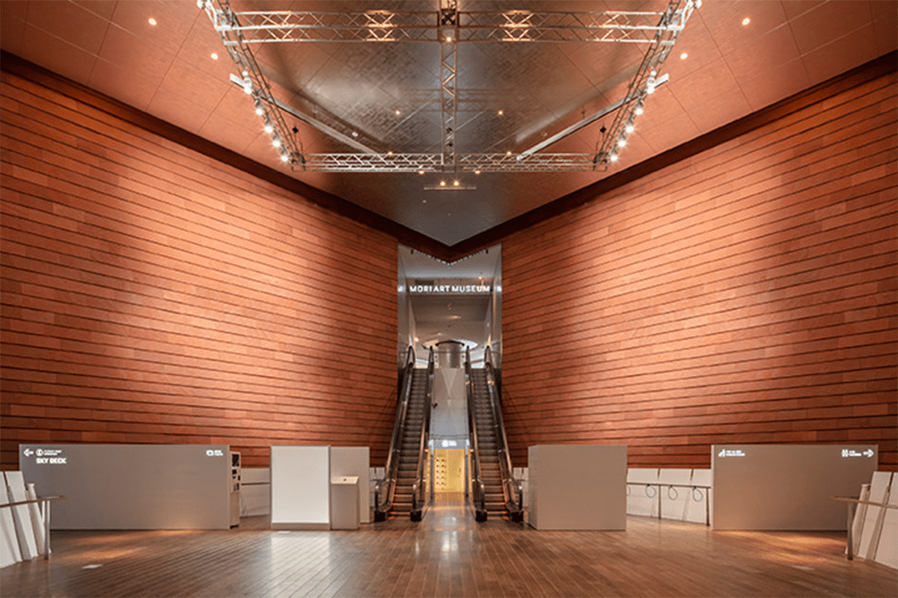
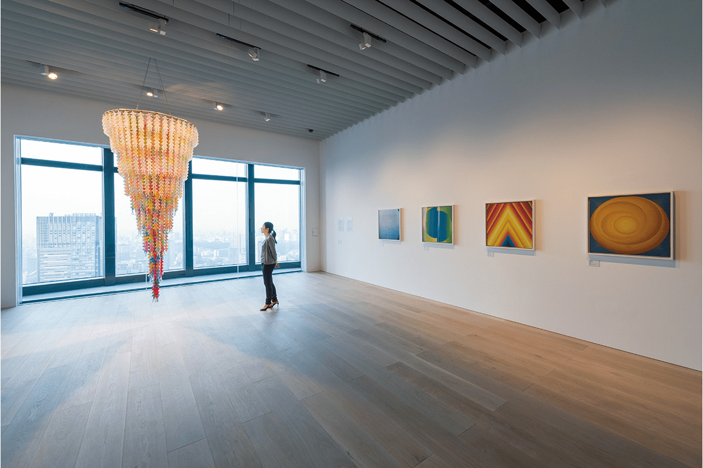
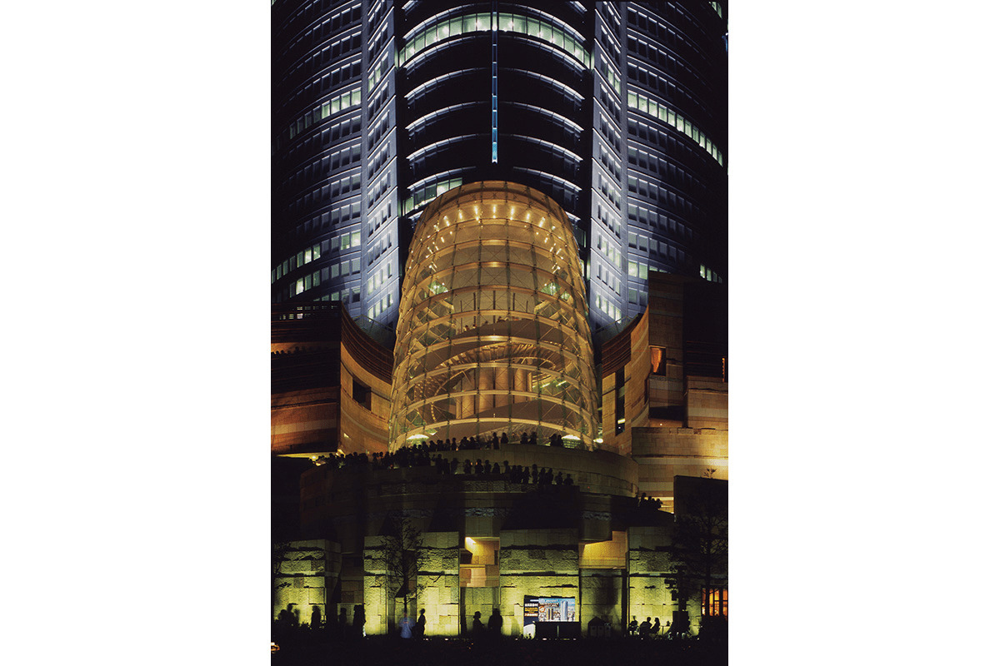
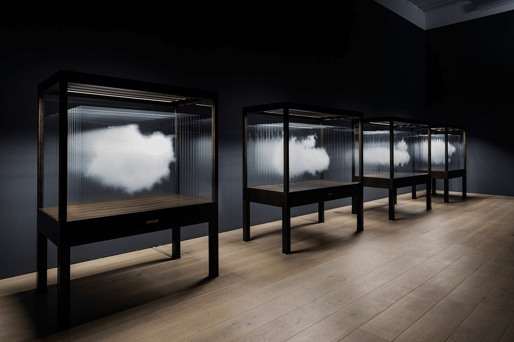
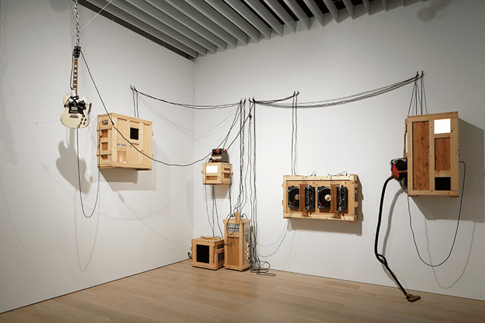
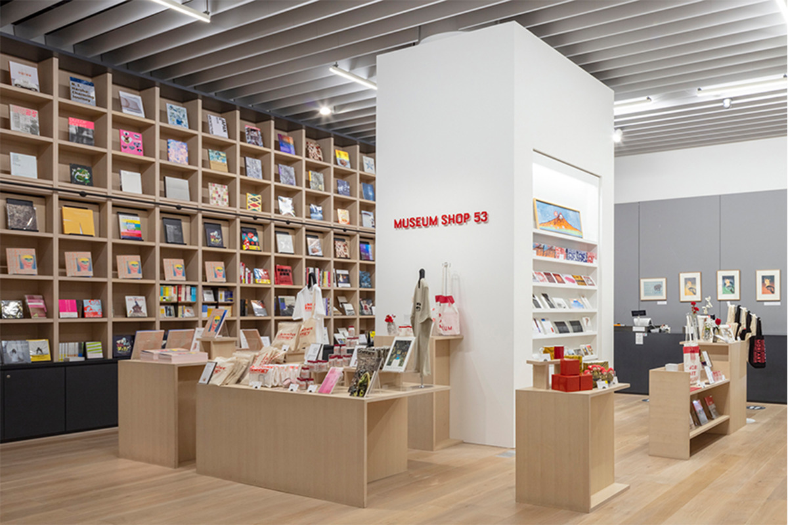
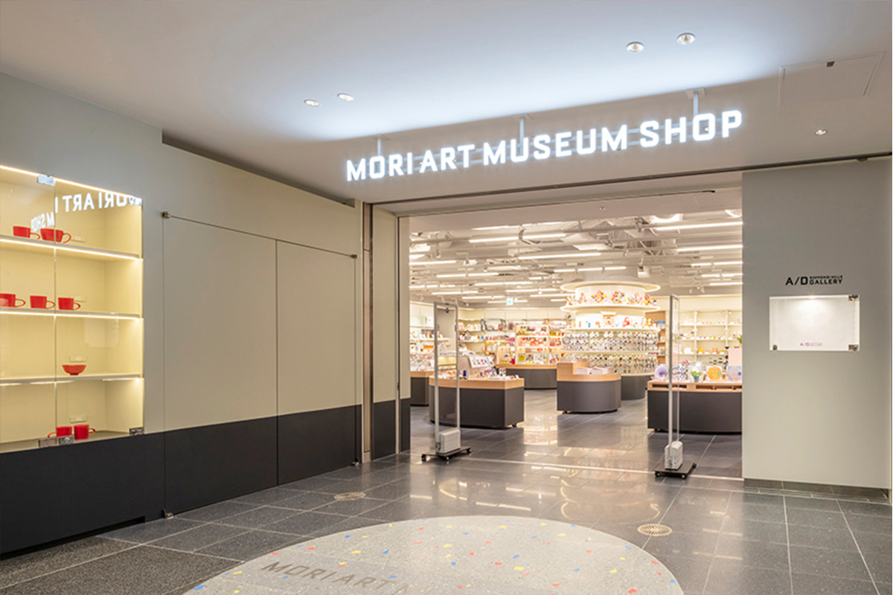

Токио · Роппонги · музей
Музей Мори в Роппонги: современное искусство на 53-м этаже башни Мори

Музей Мори занимает 53-й этаж башни Мори, которая возвышается в центре квартала Роппонги Хиллз. В его основе современное искусство, а выставки здесь смело переходят границы жанров: от дизайна и архитектуры до соседства новых работ со старинным искусством.
Музей
Искусство, которое говорит о сегодняшнем дне
Просторные залы Музея Мори раскинулись на 53-м этаже башни Мори. Музей устраивает выставки современного искусства, дизайна и архитектуры, не придерживаясь одного жанра, но главное для него всё же современное искусство. Причина проста: музей видит в нём отражение самых разных сторон сегодняшней жизни и считает важным учиться его читать.

При этом музей не держится за жёсткие рамки и, например, показывает современное искусство рядом со старинным. Его девиз звучит как «Искусство плюс жизнь»: приблизить современное искусство к людям и сделать его частью повседневности.
Отсюда и расписание. Во время выставок музей работает без выходных, а во все дни, кроме вторника, открыт допоздна, так что сюда можно зайти вечером в будний день, после учёбы или работы. С сентября 2027 года по апрель 2028 года музей закрывается на ремонт.

Программы
Коллекция, видео и эксперименты
Кроме больших выставок, в музее идут свои программы поменьше. В «MAM Collection» показывают работы из собрания музея, в «MAM Screen» видеоискусство, в «MAM Research» выставки архивных материалов, а в «MAM Project» музей вместе с художниками ставит экспериментальные проекты.
Много внимания музей уделяет и просветительской работе. Для самых разных посетителей здесь устраивают мастер-классы, симпозиумы и беседы в залах, где об искусстве узнают через опыт и разговор.

Собрание
Город из фанеры и старой техники
С 2005 года Музей Мори собирает современное искусство Азии, в том числе Японии. В 2015 году, после обновления музея, появилась программа «MAM Collection»: работы из собрания по очереди показывают в небольших выставках на разные темы.
Одна из главных вещей коллекции это «Вертикальный фанерный город» Мунэтэру Удзино, художника, который работает по всему миру. Это звуковая скульптура: из фанеры и подержанной бытовой техники он собрал вымышленный город.

Магазины
Книги и сувениры после выставки
У музея два магазина. Один находится прямо в музее на 53-м этаже, другой на третьем этаже галереи West Walk в Роппонги Хиллз.


Музей Мори
- Адрес
- Токио, Минато, Роппонги, 6-10-1, Роппонги Хиллз, башня Мори, 53-й этаж
- Телефон
- +81 50-5541-8600
- Часы работы
- 10:00–22:00, во вторник до 17:00 (вход за 30 минут до закрытия; 2026 год)
- Выходные
- во время выставок без выходных
- Цены / Вход
- зависит от выставки
- Как добраться
- от станции Роппонги линии метро Хибия прямой переход по подземному вестибюлю. Есть парковка Роппонги Хиллз.
- Сайт
- mori.art.museum
Фото: Юя Фурукава, Кэйдзо Киоку, Кэнта Хасэгава, Музей Мори.